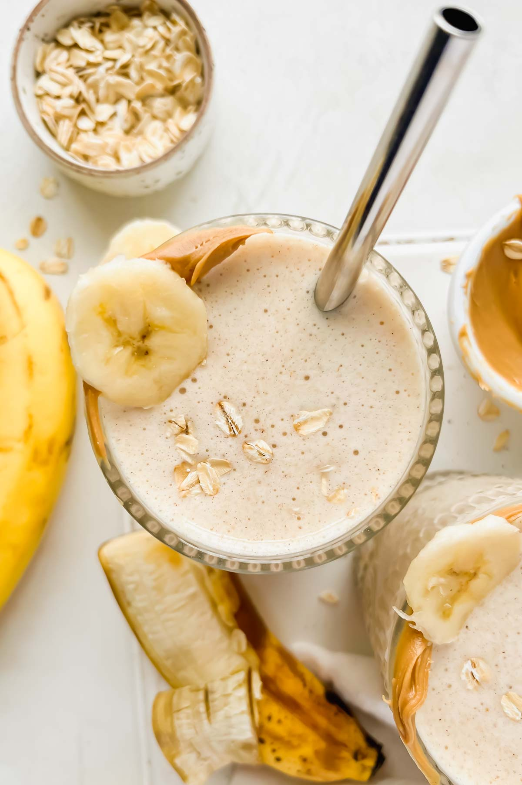

Home
Protein Banana Milkshake

Description
This recipe is quick, filling, and healthy. (Depending on your needs that is.) Good protein, high in fiber, calcium, and vitamin D3, as well some healthy fats and a good amount of calories if your someone that's looking for that.
Ingredients
- 1 cup of milk
- 2 bananas
- 2 tbsp of peanut butter
- 1/2 cup of oats
- Protein powder
Steps
- Find and have your ingredients ready.
- Pour all of them in a blender.
- Mix until everything looks all mixed together.
- Serve, and enjoy!
Tips
- You can add some cocoa powder to give it a chocolatey flavor.
- You can also use almond milk instead cow milk.